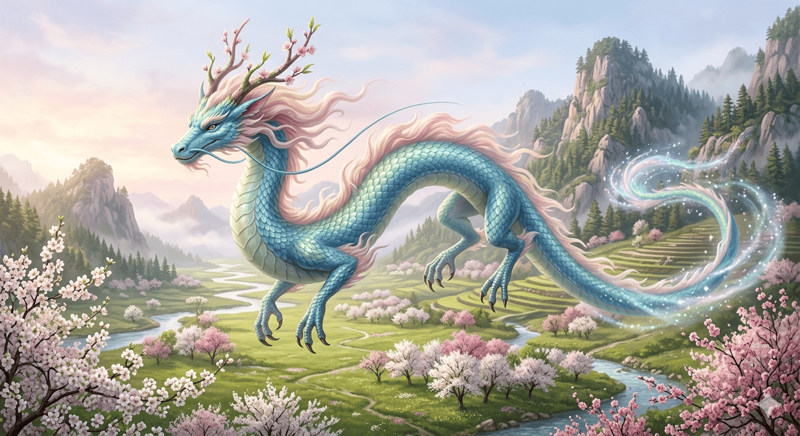

A seasonal guide to the keepers of the wild
In the heart of the ancient woodlands, the Western Dragon is often reimagined as a creature of moss and timber. Characterized by their massive wingspans and heavy, bark-like scales, these dragons are the ultimate protectors of the spring bloom. While traditional lore speaks of fire, the spring-variant dragons are often associated with the awakening of the earth, their breath said to accelerate the growth of the surrounding flora.
These beings are noted for their deep connection to the lifecycle of the forest. They do not hoard gold, but rather protect the "treasures" of nature—rare orchids, crystal-clear springs, and sacred groves. Their presence is a sign of a healthy ecosystem, and many legends claim that where a dragon sleeps, the grass grows greener and the flowers never wilt, even in the harshest of seasons.

The Eastern dragons of the spring are synonymous with the gentle rains and the returning warmth of the sun. These serpentine spirits are often depicted in shades of azure and pale jade, gliding through the morning mist without the need for wings. In this "Accent Spring" tradition, they are seen as the weavers of the breeze, guiding the migration of birds and ensuring the dispersal of seeds across the vast meadows.
The anatomy of these Zephyr dragons is a harmonious blend of the natural world, featuring antlers that resemble budding cherry blossoms and scales that shimmer like dew on a leaf. They are rarely viewed as aggressive; instead, they are respected as the architects of the changing seasons. Farmers and travelers alike look to the sky during the vernal equinox, hoping for a glimpse of a shimmering tail among the clouds.
As our understanding of these myths evolves, we find that the dragon remains a versatile symbol of renewal. Whether appearing as a stout guardian of the heavy brush or a lithe spirit of the high winds, they embody the vibrant energy of the spring. Their stories remind us that power is not always found in destruction, but often in the quiet, persistent strength of a world waking up after a long winter.